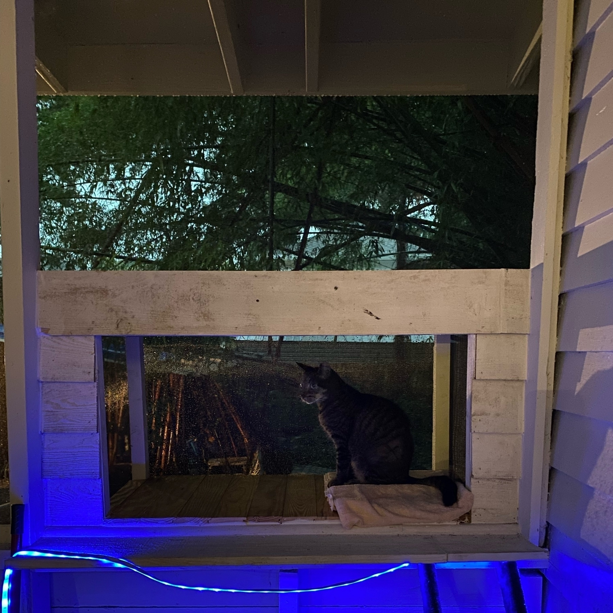

Dusting off my micro.blog instance to see if I can get the archive to finally generate so I can migrate to Eleventy. Not sure why it’s down- DNS looks correct-not interested in debugging. Edit 1 for debugging. Edit 2 still debugging.
So my current take on the state of IoT home automation is if you are already deeply invested in Apple products and invest in a HomeKit compatible mesh WiFi, accessories are relatively inexpensive. Assuming a trust level with Apple you get IMO a high level of security built in.
(These are my prepared remarks edited with footnotes of ad libbed changes.)
Good evening. My name is Michael Bishop. I am proud Tampa native residing for over 20 years in what I prefer to call the Giddens Park area with my partner and our three rescued pets. The two cats & dog actually own the place, we just have a lifetime lease 1. If only they would also take care of the maintenance on a home nearing 100.
First I’d like to thank everyone here tonight for your service to our community. I look forward to meeting everyone regardless of whether I am selected for the advisory committee.
My advocacy for my neighbors didn’t start here nor will it end here . And when I say neighbors, I mean the folks that celebrate birthdays on Saturday or play basketball Sunday mornings at my beloved Giddens Park as much as I do my next door neighbor. I also mean the folks that have lost their way and are living along Nebraska Ave from the I-4 overpass beyond the CRA.
So why do I want to be on the CAC? Because I believe I can bring experience, drive and humility to support the critical role this committee plays.
The key lesson in civic technology is there is no tech bro saves the day story line. Technology rarely matters. It’s often the easiest part. Where it breaks down is translating how policy is implemented in the technology. Needless red tape becomes a non-starter for folks on spotty wifi or phone with a cracked screen. If everyone isn’t included in the process it will glaringly show up in the result.
One of the most profound experiences of my life was attending a full day diversity and inclusion training led by Lauraellen McCann through my volunteer work with Code for Tampa Bay. What I took away most from that training was to fully understand the immense level of privilege I was born with. Able bodied, straight CIS white man. If my father had been CEO at the phosphate plant instead of a laborer along with a lot of folks from this neighborhood, I really would have won the golden ticket. But even then, I understand there are two different kinds of poor.
So I was challenged to use my privilege to model behavior and stand up to those that abuse theirs. I don’t always get it right but I am always guided by honesty, empathy and ethics.
Of the many lessons I took away from that day another was to go to where the work is being done. Which meant turning all of my attention back on the city. January of this year I began watching every council & CRA board meeting. It didn’t take me long to see how the two cookie jars work.
So while I have not had the honor to meet the folks currently on the committee putting in the work, it would be my honor to support the ongoing efforts of the committee.2
3 minutes isn’t a lot of time, so if anyone has a question for me I’d like to make myself available this evening or via phone or email.
Finally, I’d like to share that as a kid growing up playing baseball in Tampa, Belmont Heights will always hold a special place for me. Playing against Derek Bell in senior league was a special experience.3
Some people find gold behind old walls, I find 50 year old mouse motels. Though when the acorns came tumbling out, for a brief second…
You deserve this bee taking a pollen bath in a blue jacket spiderwort flower.
Starting a Florida native pollinator garden should be on every Floridian’s to-do list.
This week’s discovery was the 52 qt ice chest that claims it keeps the ice for 3 days is in fact true if you start with 40 lbs of ice. 20 doesn’t stand a chance though.
YouTube has become a major source of federal information for me when I’ve been offline. The White House daily press briefing & CSPAN clips of notable statements is a quick way to catch up w/out the punditry (or commercials).
I just read the words “data driven strategies for human capital” and now I want to burn something down.
I don’t know what level of enlightenment it is when your soul has been crushed and you garden but that’s exactly where I am finding myself. Weeding has never had more meaning.
I believe I convinced someone I care deeply for to get vaccinated. Knowing mRNA research is twelve years in the making was key. The sand spur analogy for the virus helped too I think.
Driving 90 miles to tell her in person sold it.
We need to stop thinking of “getting back to normal” as returning to previous routines & behavior.
Rather, use the lessons we’ve learned and our new perspective to find fresh routines that reinforce our outlook and move us forward.
I’d like to see the efficacy of the vaccines broken down by age group. I know there’s some data coming on neutralization that sounds promising.
Saw a trending repo is a MEGA-LINTER (you must use the monster truck rally promo voice)
Friends, that’s defeating the purpose. Linters should be tuned to the project at hand.
What that really sounds like is a mega package with dependency hell.
I don’t know who needs to hear this but focusing on your health is great but if you don’t know what you are living for and aren’t making the most of every day none of it matters.
The thing I like most about being on a remote team is having a morning check in. Mostly because it gave me an anchor point for accountability to start my day. Not the same with a bot.
For the love of all things holy, can the iOS widget design team please offer the option to hide the widget title? I’d be happy with global option to hide app & widget titles.
I did a branding exercise with a friend and came to learn what I was researching was Memphis design.
I’m going the opposite direction, but that’s ok.
What I wasn’t expecting was to read about a “corporate Memphis” cartoon marketing phenomenon today.
My buddy Grady 🐱 finishes week 3 of chemo tomorrow. One more to go. He was indoor/outdoor until this.
I built him a catio on the back porch.

Impressed with the eero pro. Really does play nice with HomeKit. Adding accessories is a breeze. I know, Amazon…but they made me an offer I couldn’t refuse. Starting new business and needed to up my WFH situation. This with gigabit fiber straight into the house = new ball game.
Generating and managing app specific passwords for Apple Mail/Calendar on iOS should be way easier. Or is that part of the security model?
Going to start a developer bootcamp called Read the Docs. (I know what acronym you are thinking but that’s for someone who knows where the docs are).
Today’s woodworking led me down the rabbit hole of Knapsack and Traveling salesman problems to the branch and bound algorithm. Why no one introduced me to NP-problems as a kid will haunt me.
I bet with those new tags from Apple and a cheap Smart lock you could build a HomeKit pet door he says to himself eyeing the hole in the back porch door covered by plywood.
Look out world. After 52 years of lefty only hand tool use, I’ve become ambidextrous with a 7 ¼” cordless circular saw.
Which means I’m consistently ⅛” off one way or another.
“Email on Acid” product announcement gave a me a good laugh. Do kids these days even know what LSD is?
Trying to write marketing copy about technical debt and subconsciously used cancer as an analogy. Three quarters of the way in I realized that was because of all the discussions I’ve recently had to have about feline oncology. 😿
In line at a 7-11 and a guy complaining how these used to be convenience stores in the 70s but now there’s nothing convenient while using a plastic card and punching in 4 numbers to get his $5 5 minute pizza.
I don’t want a head stone so maybe someone can make sure to write “irreconcilable difference” in the sand as my body is lit on fire and pushed out towards the gulf.
Fulfilled a childhood dream yesterday. One unbeknownst to me until a couple of months ago was possible. On the way out caught one of my favorite Florida wildflowers blooming—Yellow Prickly-poppy.
Where is the chat room for Who Killed Sara fans who’ve binged watch season 2? It’s the perfect murder mystery telenovela. Don’t watch with overdubs though. Lol
My prayers have been answered. You can now archive other logins to a site and only have your preferred one(s) suggested in 1Password. Goodbye 8 old Twitter and 5 Google accounts.
This past couple of weeks I went back to 2010 era web development and it’s as ugly as you remember it.
I might be it’s biggest critic but if I’m going to build a website in 2021 I want to be able to leave the “Proudly powered by WordPress” prominently in the footer.
Has anyone considered doing what An Event Part does but more indie band touring clubs style? I guess that used to be barcamps but that seems to have evolved way past the web. Front End Conference was as close as I’ve gotten and that small theater.
Someone tell me they have had good luck with a particular mesh WiFi solution that plays nicely with HomeKit. I can’t seem to find a straight answer on the eero 6.
It was refreshing to see the trendiest teen fashion at the fancy mall with the Apple Store was basically Robert Smith sans eyeliner.
You know you’re reaching your limit when you could loose it because the spoons and forks are mixed together and you just need that one special spoon you only use for this thing…
Tonight I got turned around backwards because a cli package of another node package is version 2.1 but the main library is at 3.3.
I feel like when I use the phrase “fewer moving parts, fewer broken pieces” I should include a snippet of @davidbazan because I can’t hear it any other way now.
I’m now the person that takes pics of his dog at the park. Here’s Auggie with the first friend he made at the park, Bella.
Somehow I managed to come out of the pandemic with an improved credit score putting me just into “excellent” territory. Bloody amazing.
Was having all kinds of trouble with a Docker compose file for WordPress dev that worked fine for the past year until it didn’t. Seems mysql:latest was the culprit. Switching to mariadbresolved it. Is MySQL 8 that big of a change?
I think of empathy as using learned and personal experiences to put yourself in the other person’s shoes and treat accordingly. But a quote I think that’s attributed to Nietzsche “you best teach what you most need to learn.” twitter.com
Priorities being what they are and the idea of sunsetting miklb.com for awhile I’ve decided to move to MichaelBishop.me. Specifically bytesof.michaelbishop.me hosted on @microblog. Eventually the top level with be edited content. Words and images. Maybe some code. But for now, raw content. Possibly aged.